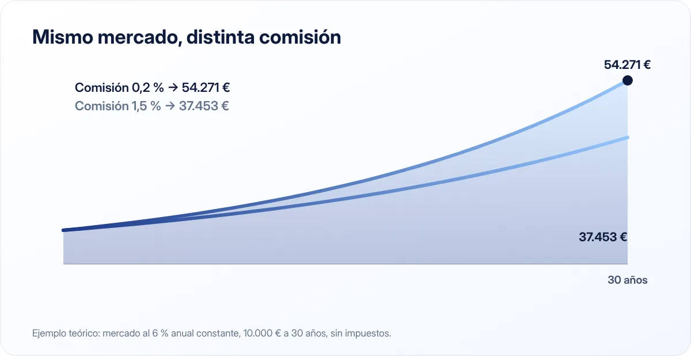

Fondos indexados para principiantes: qué son, ventajas y riesgos
Los fondos indexados se han convertido en una de las formas más populares de invertir a largo plazo. Antes de empezar, conviene entender bien qué son y qué no son.

Puntos clave
- Un fondo indexado replica un índice (por ejemplo, las grandes empresas mundiales) en lugar de intentar batirlo.
- Su gran ventaja son las comisiones bajas, que a largo plazo marcan una gran diferencia.
- Invierten en bolsa: su valor puede bajar y deben usarse para horizontes largos.
Qué es un fondo indexado
Un fondo de inversión reúne el dinero de muchas personas y lo invierte en un conjunto de activos. Hay dos grandes enfoques:
- Gestión activa: un equipo de gestores elige qué comprar y vender intentando obtener más rentabilidad que el mercado.
- Gestión pasiva (indexada): el fondo se limita a copiar un índice. Si el índice incluye 1.500 empresas de todo el mundo en ciertas proporciones, el fondo compra esas mismas empresas en esas mismas proporciones.
Un fondo indexado no intenta ganar al mercado: intenta ser el mercado, con el menor coste posible.
Por qué las comisiones importan tanto

Como no necesita un equipo de analistas tomando decisiones constantes, un fondo indexado suele tener comisiones mucho más bajas que uno de gestión activa. Esa diferencia, que parece pequeña, se acumula cada año gracias al interés compuesto.
Imagina 10.000 € invertidos durante 30 años en un mercado que rinde de media un 6 % anual:
| Comisión anual total | Rentabilidad neta | Valor a 30 años |
|---|---|---|
| 0,2 % | 5,8 % | 54.271 € |
| 1,5 % | 4,5 % | 37.453 € |
Con exactamente el mismo mercado, la diferencia es de casi 17.000 €, solo por las comisiones.
Ejemplo teórico con rentabilidad constante y sin impuestos. La rentabilidad real de la bolsa varía cada año y puede ser negativa.
Las ventajas
- Diversificación: con un solo fondo puedes tener una pequeña parte de cientos o miles de empresas, lo que reduce el riesgo de que una mala empresa arruine tu inversión.
- Costes bajos: como hemos visto, a largo plazo es una gran ventaja.
- Sencillez: no tienes que analizar empresas ni seguir la actualidad cada día.
- Transparencia: sabes en qué invierte el fondo porque sigue un índice público.
Los riesgos
Es importante no perderlos de vista:
- Riesgo de mercado: si la bolsa cae, tu fondo cae con ella. En crisis fuertes, los índices han llegado a perder un 30 %, un 40 % o más en poco tiempo, y han tardado años en recuperarse.
- Riesgo de divisa: si el fondo invierte en empresas de otros países, las variaciones del tipo de cambio afectan al valor en euros.
- No hay garantía: a diferencia de un depósito, el dinero invertido en un fondo no está cubierto por el Fondo de Garantía de Depósitos frente a pérdidas de mercado.
- Riesgo de comportamiento: el mayor riesgo suele ser vender por miedo en plena caída y convertir una pérdida temporal en definitiva.
Invierte en bolsa solo el dinero que no vayas a necesitar en muchos años y después de tener un fondo de emergencia. Si una caída del 30 % te haría vender, la proporción es demasiado alta para ti.
Fondos indexados y ETF
Los ETF también replican índices, pero cotizan en bolsa como si fueran acciones. Para un inversor residente en España, la diferencia fiscal más relevante suele ser esta:
- Los fondos de inversión permiten traspasar el dinero de un fondo a otro sin tributar en ese momento. Solo pagas impuestos cuando reembolsas (vendes) definitivamente.
- Los ETF, con carácter general, no disfrutan de ese régimen de traspasos: cada venta con ganancia tributa.
En ambos casos, las ganancias tributan en la base del ahorro del IRPF cuando las materializas. Consulta la normativa vigente o a un asesor fiscal si tienes dudas sobre tu caso.
Antes de invertir: checklist
- ¿Tienes un fondo de emergencia completo?
- ¿Has liquidado las deudas caras?
- ¿Vas a poder dejar el dinero invertido al menos 10 años?
- ¿Entiendes que puedes ver tu inversión con pérdidas durante meses o años?
- ¿Has leído el documento de datos fundamentales del fondo y comprobado sus comisiones?
- ¿La entidad comercializadora está registrada en la CNMV?
Si la respuesta a todas es sí, puede tener sentido informarte más a fondo. Si alguna es no, empieza por ahí.
Aportaciones periódicas
Muchas personas invierten una cantidad fija cada mes en lugar de todo de golpe. Esto ayuda a crear el hábito y reduce el riesgo de invertir todo justo antes de una caída. Lo vimos con números en el artículo sobre interés compuesto.
En resumen
Un fondo indexado copia un índice con comisiones bajas, lo que lo convierte en una herramienta interesante para invertir a largo plazo. Pero invierte en bolsa: puede bajar, no está garantizado y exige paciencia. Este artículo es divulgativo; no es una recomendación de inversión.
Fuentes consultadas
Este artículo es informativo y no constituye asesoramiento financiero, fiscal ni jurídico personalizado. Las cifras son orientativas y pueden cambiar; consulta las fuentes oficiales y, si lo necesitas, a un profesional. Cómo elaboramos nuestras guías.